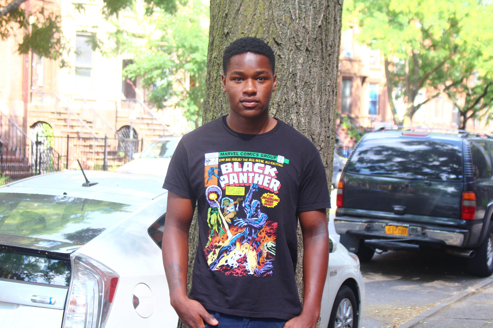

I'm always actively seeking to incorporate new and different philosophies, methodologies and approaches into my perspective. I believe everything is different and unique, and nothing exists in a vacuum of itself. Three years ago I started an Arts and Technology non-profit called GrowHouse NYC; our mission is to provide a safe and nurturing space for experimentation, creativity, and growth, for disenfranchised, underserved and non-traditional students and youth. I am earning a certificate in Web Development, at LaGuardia's TechHire Open code program; also I'm currently attaining a Liberal Arts degree from Bard College. I have several years experience in freelance graphic design I aspire to become a UI/UX designer in the future, and I hope to be able to start my own peer mentorship programs in Brooklyn in the future.
I'm always actively seeking to incorporate new and different philosophies, methodologies and approaches into my perspective. I believe everything is different and unique, and nothing exists in a vacuum of itself. Three years ago I started an Arts and Technology non-profit called GrowHouse NYC; our mission is to provide a safe and nurturing space for experimentation, creativity, and growth, for disenfranchised, underserved and non-traditional students and youth. I am earning a certificate in Web Development, at LaGuardia's TechHire Open code program; also I'm currently attaining a Liberal Arts degree from Bard College. I have several years experience in freelance graphic design I aspire to become a UI/UX designer in the future, and I hope to be able to start my own peer mentorship programs in Brooklyn in the future.
GROWHOUSE NYC Co-Founder/ Creative Director

Planned, Advised and Facilitated events, activities, and excursions within and outside NYC. Including travel programs to Washington DC, Ghana and Cuba.Conceptualized and designed community programs that encouraged guests to learn, create and explore in safe spaces.Authored grants, membership emails, and social media posts;generating consistent interaction from subscribers. Reviewed organizational calendar, categorized important dates, deadlines, and events.
AIR BNB Property Manager
Corresponded with guests assisting them with any questions or concerns, Maintained and managed six airbnb listings, keeping track of incoming guests, coordinated cleanings/ repairs, and mitigated any issues that arose during guests stay.
Burma Noodle Bar Food Intern
Managed food stand and catering, including preparation of food according to safety standards, ensuring orders were delivered on time and efficiently. Planned menus, maintained records of supplies and purchases based on stock and demand, kept daily record of sales and profits. Trained and directed new employees on proper protocol and retail etiquette; reducing turnover rate of employees.
 HOBBIES/INTERESTS: Sustainabilty and Green Space.
HOBBIES/INTERESTS: Sustainabilty and Green Space.